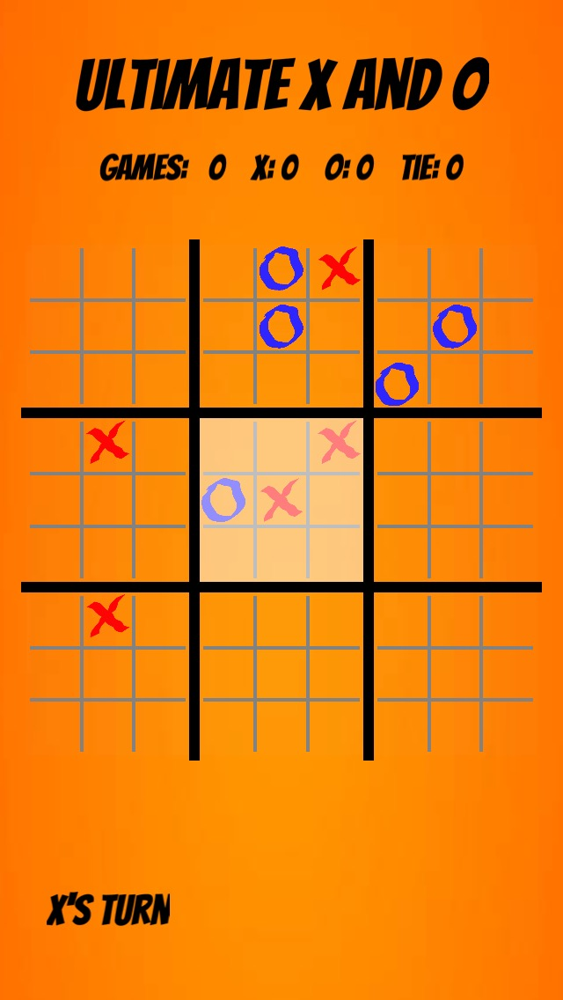
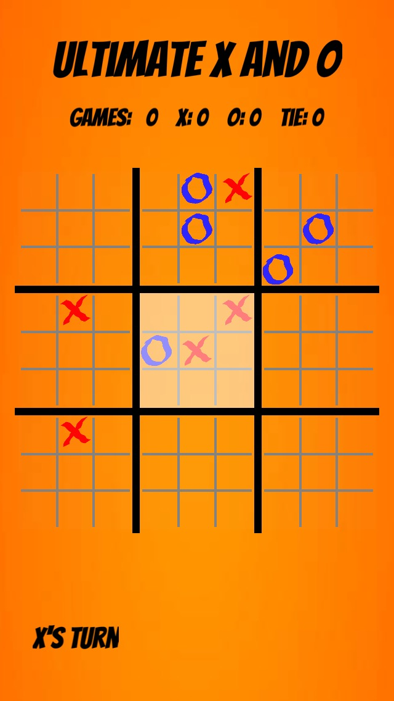
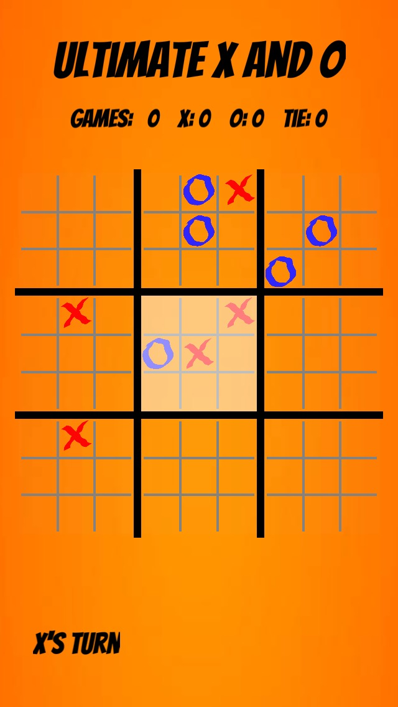

We are now ready to start Ultimate X and O. First review the rules:
Each small 3 × 3 X and O board is referred to as a sub-board, and the larger 3 × 3 board is referred to as the main board.
Each move consists of picking, if allowed, a sub-board, and then picking a location within that board.
Normally a player is not allowed to pick the sub-board, but must use the sub-board determined by the previous move. However a player is free to pick a sub-board if:
It is the first move of the game.
The sub-board indicated by the previous move is already won/tied.
The sub-board are won/lost/tied using normal X and O rules, resulting in a X, O or blank in the main board.
Game ends when either player wins the main board or there are no more legal moves remaining.
Implementation
The implementation that we have used to date is easily adopted to Ultimate X and O. Here I will only outline the steps that I carried out, you need to fill in the details:
Game Logic
Keep board to store the state of the main game board. Create table subboards which stores the states of the nine sub-boards.
All of the functions in mylib to check for wins/loss/tie work as is — just pass either the main board, i.e. board, or one of the sub-boards i.e. subboards[k] for some value of k.
Graphics

First 10 moves in a typical game.
The function drawLine can be used to draw the sub-grids. I wrote a small function, drawBoard, which draws a board centered at a given location and at a given scale. I call this function 10 times (9 sub-boards and once for the main board).
The table squares, which stores the symbol for the main board should also store the symbols played in the corresponding sub-board. I used subsquares for this.
The resetBoard function needs to be extended to
Dispose of the resources in subsquares for each square in squares.
Reset the subboards table to represent the empty board.
UI
A move consists of one or two taps.
If the player is not free to pick the sub-board, then the current sub-board is highlighted and the player just picks the location. Note — I coded this by dealing with events relative to the main board. This does make life much easier.
If the player is free to pick the sub-board, then the first tap is to select a sub-board.
The validating of the one/two taps is carried out in checkMove, which then calls move with two integers (for me k and kk) which indicate the sub-board number and the cell in that sub-board.
AI
Need to pass both boards and subboards to ai.move function.
The minimax implementation should work as is — except for the loop iterating over the moves. The 1...9 loop in X and O needs to be replaced by looping over sub-boards and looping over cells in that board.
The main issue here is the increased size of the game tree. You can improve the search by implementing a more advanced evaluation function.
Upload to Moodle
When completed, create a zip file of your project and upload to Moodle using the following link.
 
